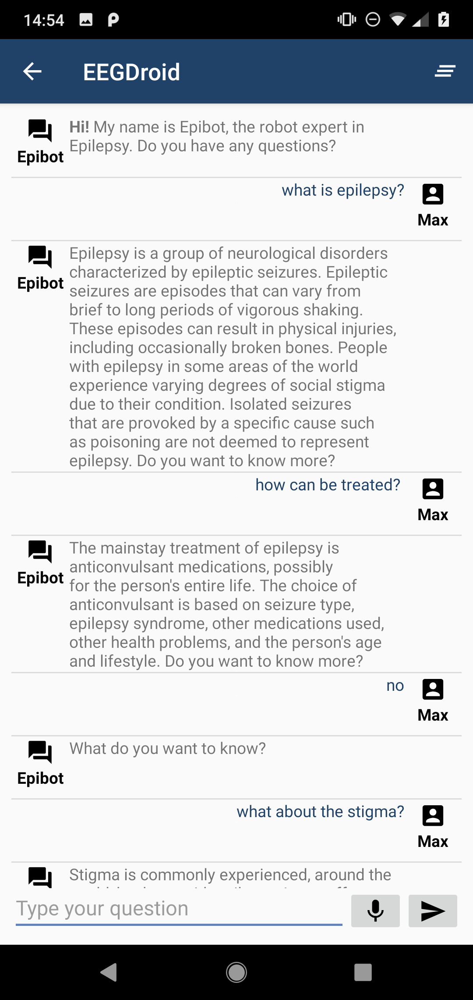
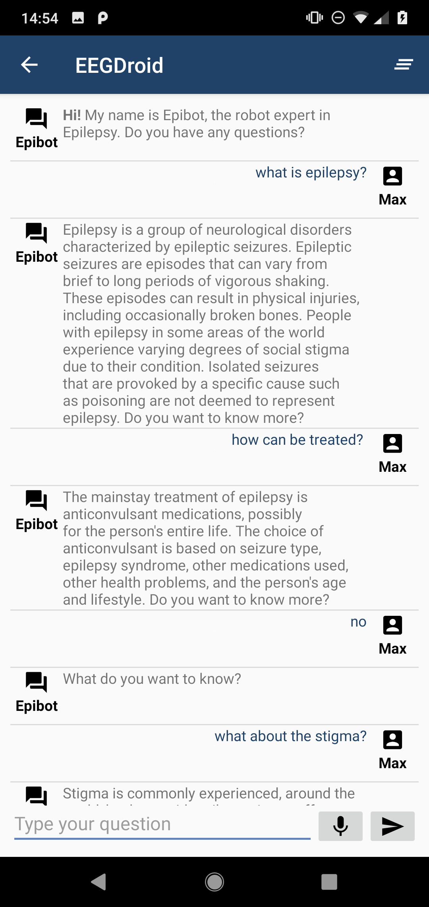
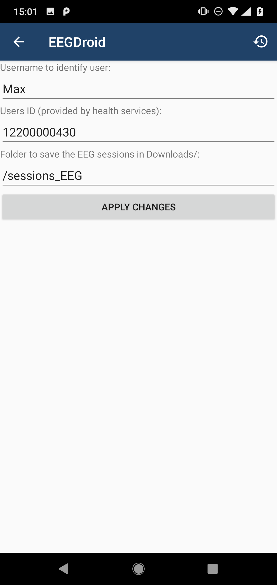
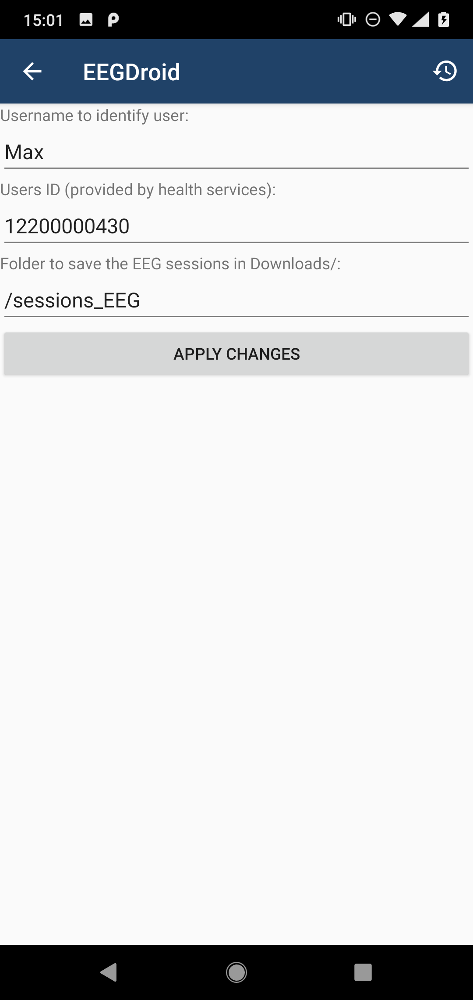

Android app for EEG data recording with the Traumschreiber
We design an Android app to collect, plot, record, save, manage, and share EEG sessions, using the Traumschreiber EEG device. The app also presents reliable information about epilepsy and counts with a chatbot expert in epilepsy, with whom the user can chat to evacuate doubts about these topics.
An architecture was design with a total of 10 different modules. In this architecture, the main functionality of the app was split between the different modules. As a result of the implementation phase, we produced a reliable and stable app, which allows the user to collect, plot, record, save, manage and share EEG sessions, as well as learn about epilepsy and EEG.
Important links
We integrate different apps in one single project:
Content of learn activity and tutorial activity:
Downloads:
- Download the app
- [Download the complete report]
Screenshots


 

 

A project of the Neuroinformatics Research Group of the Institute of Cognitive Science at the University of Osnabrück.